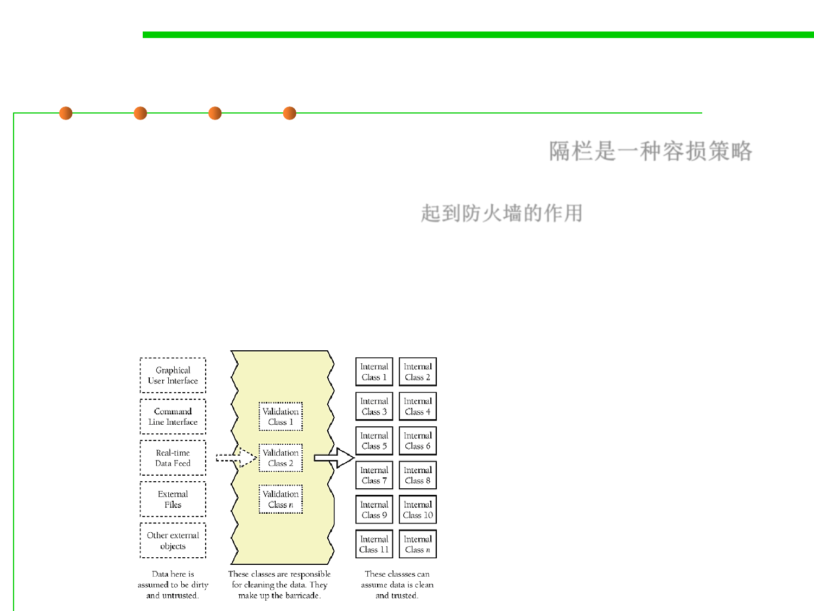

(2) Barricade 隔栏
7.3 Assertions and Defensive Programming
▪ Barricades are a damage-containment strategy. 隔栏是一种容损策略
– The reason is similar to that for having isolated compartments in the hull
of a ship and firewalls in a building. 起到防火墙的作用
▪ One way to barricade for defensive programming purposes is to
designate certain interfaces as boundaries to “safe” areas. Check
data crossing the boundaries of a safe area for validity and respond
sensibly if the data isn’t valid.
Defining some parts of the software
that work with dirty data and some
that work with clean can be an
effective way to relieve the majority
of the code of the responsibility for
checking for bad data.